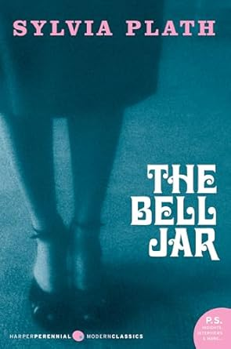

"The Catcher in the Rye" by J.D. Salinger
This classic novel follows Holden Caulfield, a disillusioned teenager who has just been expelled from his prep school. As he wanders around New York City, he grapples with the complexities of adulthood, the loss of innocence, and his struggle to find a sense of belonging. The novel captures Holden's deep cynicism about the world and his intense desire to protect the innocence of children, symbolized by his fantasy of being the "catcher in the rye" who saves children from falling into the corruption of adulthood. Through Holden's perspective, Salinger explores themes of isolation, identity, and the difficulty of navigating adolescence.
Similar Books
